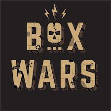
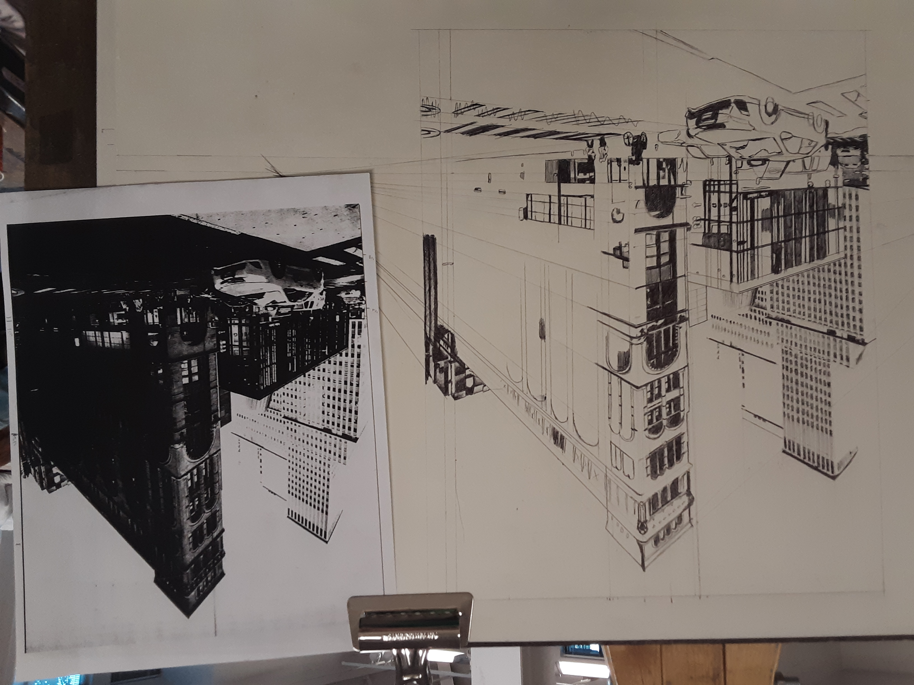

Content area
Here are a few of my core skills:
- Professional sketchwork and drawing skills for mockups and designwork
- Proficiency with 3D modeling software including Blender and Tinkercad
- Experience with assorted powertools and other construction tools./li>
- Basic project management and leadership skills
- Expert craftsman with all things cardboard
Career summary and work experience
| Work Experience | Role | Acheivements | Date |
|---|---|---|---|
| Gonzaga University IT Services | Student Support Specialist | Provided technical assistance and advice to over 500 students and faculty in 2 years by resetting accounts and troubleshooting software bugs and glitches. | 2022-present |
| Gonzaga Study Abroad Program | Pensione Representative / group supervisor | Monitored and coordinated 33 student-residents through weekly check-in forms in order to ensure the coordination and safety of all residents during travel. | 2024 |
| Gonzaga Association of Computing Machinery | Promotional Art designer / Volunteer | Designed several awards and works used in annual Hackathons and Cyber security cups hosted by the ACM since 2021 to promote the event and increase public interest. | 2021-present |
Education and qualifications
| Institution | Roles | Acheivements |
|---|---|---|
| Gonzaga University | Undergraduate, Bachelor of Arts in computer science | GPA: 3.86 | President List: Spring 2024 | Honors award: June 2022 |
| Profession | Roles | Duties |
|---|---|---|
| Gonzaga University IT | Student Support / student employee | Duties included IT technical support for students and staff, as well as network setup and repair |
| Inland Northwest Opera | Physical labor / tech assist | Worked as a general hauler/stage assembly and disassembly worker |
| Spokane Indians Baseball team | Food preparation cook | Duties included preparing food items to be sold at concession stands, as well as ensuring that all products were cooked and packaged correctly. |
interests and Hobbies
- All things cardboard and crafts!
I personally believe there is nothing you can't accomplish with a bit of glue, corrigated sheetpaper, and creativity.
 - Laserdisc players and other vintage tech
Endless facination with older tech and their history. They just don't make them like they used to.
- Indie games
As a lifelong superfan of all games and an aspiring game-maker, nothing inspires me more than other creative projects

- Drawing and sketching
My number one hobby and talent. You'll often find me doodling in the margins of all my notes!
 - Animation
No movies have captivated me in the same way the picture's like studio Ghibli's can.